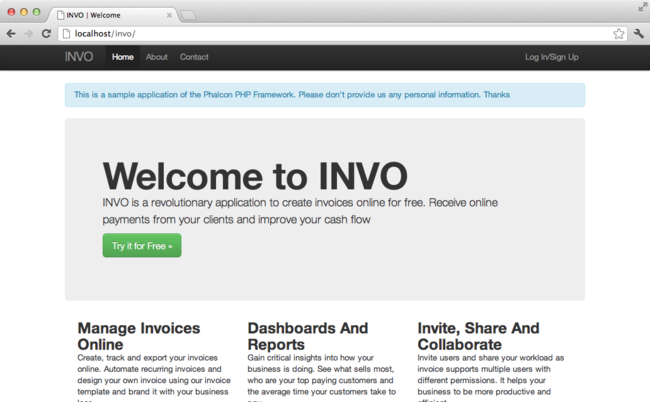

內容目录上一个主题< 教程 1：让我们通过例子来学习（Tutorial 1: Let’s learn by example） 下一个主题本页 |
教程 2：Introducing INVO（Tutorial 2: Introducing INVO）¶In this second tutorial, we’ll explain a more complete application in order to deepen the development with Phalcon. INVO is one of the applications we have created as samples. INVO is a small website that allows their users to generate invoices, and do other tasks such as manage their customers and products. You can clone its code from Github. Also, INVO was made with Bootstrap as client-side framework. Although the application does not generate invoices, it still serves as an example to understand how the framework works. 项目结构（Project Structure）¶Once you clone the project in your document root you’ll see the following structure: invo/
app/
config/
controllers/
library/
forms/
models/
plugins/
views/
public/
bootstrap/
css/
js/
schemas/
As you know, Phalcon does not impose a particular file structure for application development. This project provides a simple MVC structure and a public document root. Once you open the application in your browser http://localhost/invo you’ll see something like this:

The application is divided into two parts, a frontend, that is a public part where visitors can receive information about INVO and request contact information. The second part is the backend, an administrative area where a registered user can manage his/her products and customers. 路由（Routing）¶INVO uses the standard route that is built-in with the Router component. These routes match the following pattern: /:controller/:action/:params. This means that the first part of a URI is the controller, the second the action and the rest are the parameters. The following route /session/register executes the controller SessionController and its action registerAction. 配置（Configuration）¶INVO has a configuration file that sets general parameters in the application. This file is read in the first few lines of the bootstrap file (public/index.php): <?php
use Phalcon\Config\Adapter\Ini as ConfigIni;
// ...
/**
* Read the configuration
*/
$config = new ConfigIni(APP_PATH . 'app/config/config.ini');
Phalcon\Config allows us to manipulate the file in an object-oriented way. The configuration file contains the following settings: [database]
adapter = Mysql
host = localhost
username = root
password =
name = invo
[application]
controllersDir = app/controllers/
modelsDir = app/models/
viewsDir = app/views/
pluginsDir = app/plugins/
formsDir = app/forms/
libraryDir = app/library/
baseUri = /invo/
Phalcon hasn’t any pre-defined convention settings. Sections help us to organize the options as appropriate. In this file there are two sections to be used later “application” and “database”. 自动加载（Autoloaders）¶The second part that appears in the bootstrap file (public/index.php) is the autoloader: <?php
/**
* Auto-loader configuration
*/
require APP_PATH . 'app/config/loader.php';
The autoloader registers a set of directories in which the application will look for the classes that it eventually will need. <?php
$loader = new \Phalcon\Loader();
/**
* We're a registering a set of directories taken from the configuration file
*/
$loader->registerDirs(
array(
APP_PATH . $config->application->controllersDir,
APP_PATH . $config->application->pluginsDir,
APP_PATH . $config->application->libraryDir,
APP_PATH . $config->application->modelsDir,
APP_PATH . $config->application->formsDir,
)
)->register();
Note that the above code has registered the directories that were defined in the configuration file. The only directory that is not registered is the viewsDir, because it contains HTML + PHP files but no classes. Also, note that we have using a constant called APP_PATH, this constant is defined in the bootstrap (public/index.php) to allow us have a reference to the root of our project: <?php
// ...
define('APP_PATH', realpath('..') . '/');
Registering services¶Another file that is required in the bootstrap is (app/config/services.php). This file allow us to organize the services that INVO does use. <?php
/**
* Load application services
*/
require APP_PATH . 'app/config/services.php';
Service registration is achieved as in the previous tutorial, making use of a closure to lazily loads the required components: <?php
use Phalcon\Mvc\Url as UrlProvider;
// ...
/**
* The URL component is used to generate all kind of URLs in the application
*/
$di->set('url', function () use ($config) {
$url = new UrlProvider();
$url->setBaseUri($config->application->baseUri);
return $url;
});
We will discuss this file in depth later Handling the Request¶If we skip to the end of the file (public/index.php), the request is finally handled by Phalcon\Mvc\Application which initializes and executes all that is necessary to make the application run: <?php
use Phalcon\Mvc\Application;
// ...
$app = new Application($di);
echo $app->handle()->getContent();
依赖注入（Dependency Injection）¶Look at the first line of the code block above, the Application class constructor is receiving the variable $di as an argument. What is the purpose of that variable? Phalcon is a highly decoupled framework, so we need a component that acts as glue to make everything work together. That component is Phalcon\DI. It is a service container that also performs dependency injection and service location, instantiating all components as they are needed by the application. There are many ways of registering services in the container. In INVO, most services have been registered using anonymous functions/closures. Thanks to this, the objects are instantiated in a lazy way, reducing the resources needed by the application. For instance, in the following excerpt the session service is registered. The anonymous function will only be called when the application requires access to the session data: <?php
use Phalcon\Session\Adapter\Files as Session;
// ...
// Start the session the first time a component requests the session service
$di->set('session', function () {
$session = new Session();
$session->start();
return $session;
});
Here, we have the freedom to change the adapter, perform additional initialization and much more. Note that the service was registered using the name “session”. This is a convention that will allow the framework to identify the active service in the services container. A request can use many services and registering each service individually can be a cumbersome task. For that reason, the framework provides a variant of Phalcon\DI called Phalcon\DI\FactoryDefault whose task is to register all services providing a full-stack framework. <?php
use Phalcon\DI\FactoryDefault;
// ...
// The FactoryDefault Dependency Injector automatically registers the
// right services providing a full-stack framework
$di = new FactoryDefault();
It registers the majority of services with components provided by the framework as standard. If we need to override the definition of some service we could just set it again as we did above with “session” or “url”. This is the reason for the existence of the variable $di. In next chapter, we will see how to authentication and authorization is implemented in INVO. |